CS595
Machine Learning and Social Media
Lecture 4: Network Analysis Overview
Aron Culotta
Assistant Professor
Computer Science
Illinois Institute of Technology
- Easley & Kleinberg: "Networks, Crows, and Markets", Ch 1
Examples of networks
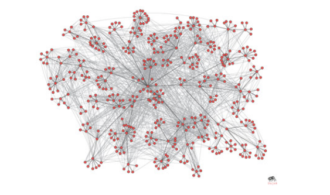
Source: E & K
Banks / Loans
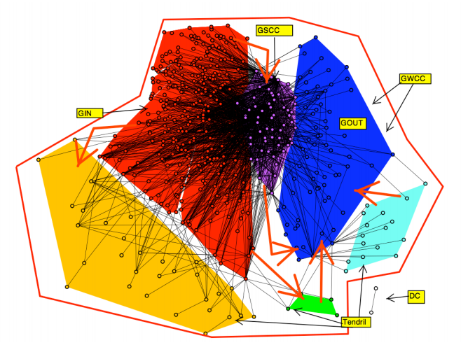
Source: E & K
Nonprofits
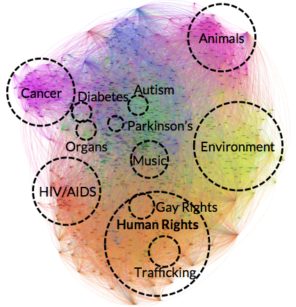
Trade Routes
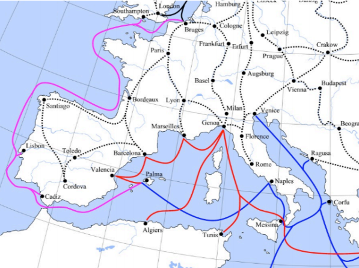
Tuberculosis

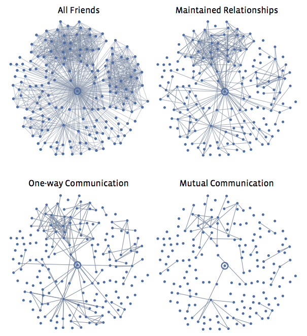 One data set, many graphs
Source: E & K
Applications
- fraud detection
- marketing
- epidemiology
What is a network?
Graph theory
- $G = (E, V)$
- $G$: graph
- $V$: vertices / nodes
- $E$: edges / links
- weighted or unweighted
- directed or undirected
Graph Properties
- Degree$(v_i)$: number of edges from $v_i$
- for directed edges: indegree, outdegree
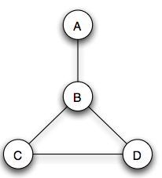
Degree$(B)$ = 3
Graph Properties
- Path: set of edges connecting two nodes
Path$(A,D) = \{e_{AB}, e_{BD}\}$
Graph Properties
- Cycle: path that starts and ends with the same node
$\{e_{BD}, e_{DC}, e_{CB}\}$
Graph Properties
- Distance$(v_1, v_2)$: length of shortest path between $v_1$ and $v_2$
Distance$(A, D) = 2$
Graph Properties
- Diameter$(G)$: distance between the two nodes in $G$ that are farthest apart
Diameter$(G) = 2$
Graph problems
- Search
Milgram's experiment
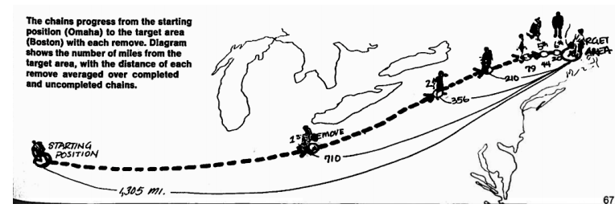
Source: E & K
Small worlds
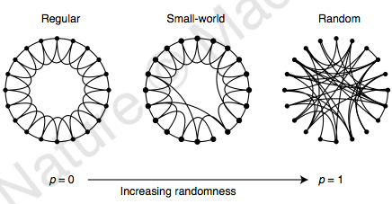
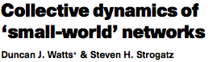
Small worlds
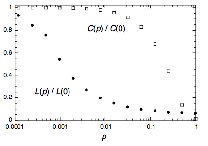
- $L$: average shortest path
- $C$: clustering coefficient - fraction of your friends that are also friends
Scale-free networks
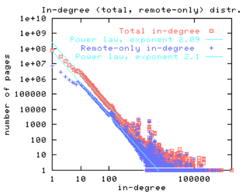 $P(k) \sim k^{-\gamma}$
- $P(k)$: fraction of nodes with degree $k$
- $\gamma \in [2,3]$: network parameter
- Describes diverse types of networks: internet, email, ...
Influencers
- Who has the biggest influence on the rest of the network?
Spread of influence
- How does the network change over time?
- $\sigma(v_i) = \sum_{v_j\in N(v_i)} f(v_j, v_i)$
- $N(v_i)$: neighbors of $v_i$
- $f(v_j, v_i)$: influence of $v_j$ on $v_i$
- $v_i$ becomes activated when $\sigma(v_i) > \theta$
Granovetter [1978]: "Linear threshold model"
Community detection
- What are the most connected components?
Link prediction
- Will an edge between $v_1$ and $v_2$ form?
Discussion questions
- What types of nodes and edges exist in Twitter? in Facebook?
Discussion questions
- What is an example of a network that is not a "small world"?
Discussion questions
- What are other examples of homophily?